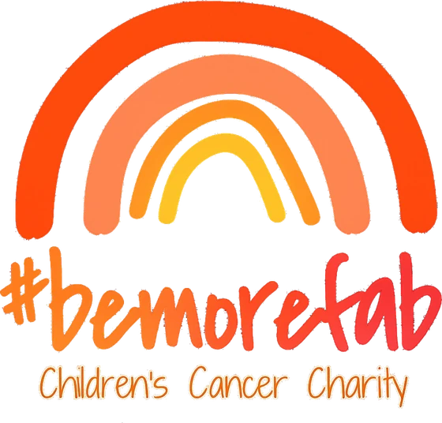

All our support
Since our records began we have supported
children and young people
See why we are needed
BeMoreFab supports children, families and schools through childhood cancer. These numbers come straight from our own records.
Last updated today
We can't show the latest numbers right now. Please try again in a little while.
Since our records began we have supported
children and young people
See why we are neededThis week
children are learning with us
See educationThis school year our teachers have taught
minutes of live lessons
See the Virtual SchoolRight now
brothers and sisters are part of Freddie's Friends
See Freddie's FriendsAround 2,000
children are diagnosed with cancer in the UK every year. That is more than five every day.
Source: Cancer Research UK, 2019 and 2021 to 2022
More than 4,000
a year when young people aged 15 to 24 are included.
Source: CCLG: The Children & Young People's Cancer Association
9% higher
Recorded rates of childhood cancer have risen by around 9% since the early 2000s.
Source: Cancer Research UK
More than 8 in 10
children now survive for five years or more, so keeping their learning going matters.
Source: Cancer Research UK, 2012 to 2016
Treatment can mean long spells away from the classroom, and brothers and sisters feel it too. That is where we come in.
When cancer keeps a child out of school, we keep their learning going: live lessons in our Primary Virtual School, tuition close to home, and secondary learning with our partners.
This week children are learning with us.
Live lessons with qualified primary teachers, every school day. Wellbeing and confidence come first, and we work alongside each child's own school.
This school year our teachers have taught minutes of live lessons.
Cancer changes life for brothers and sisters too. Freddie's Friends is for them: a gift chosen for each child, and treats through the year.
Right now brothers and sisters are part of Freddie's Friends.
We support families right across the UK. To protect children's privacy we round these figures to the nearest 5, and we never show a number smaller than 5.
We are building this part now. It will show what children and families tell us changes for them: confidence, learning and getting back to school.